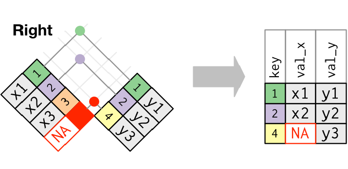
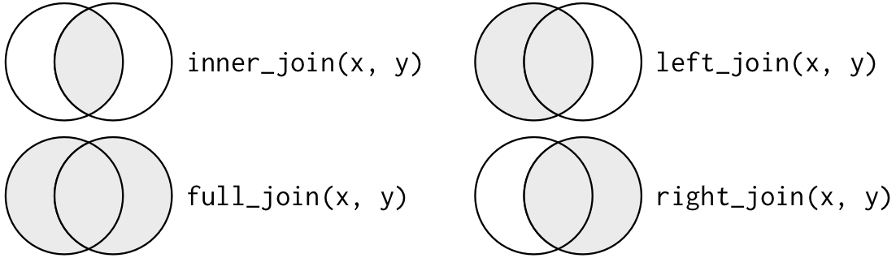

Computing for the Social Sciences: Lecture 7
Topics: Data Cleaning, Importing Data, Relational Data
Agenda
Data Cleaning
1.1 Renaming & Recoding Variables
1.2 Syntactic vs. Non-syntactic Variable Names
1.3 Missing DataImporting & Exporting Data
Relational Data
Slides last updated on October 20, 2025. Slides authored by Sabrina Nardin. AI used to polish slides style and fix typos.
1.1 Data Cleaning: Renaming & Recoding Variables
Definitions
Renaming: change variable names (column names)
Recoding: change values/levels of categorical variables (column values; e.g., inside a column)
Uses
When might you need to rename variables or recode their values?
- You are cleaning data
- The variable name has issues:
Flipper Length (mm)→flipper_length_mm - You need to standardize values:
"Good"and"GOOD"→"good" - Etc.
- The variable name has issues:
- You are preparing data for modeling or visualization
- You want to recode
"FEMALE"/"MALE"to0/1for a regression model
- Etc.
- You want to recode
We work with the Penguins (raw) Data!
Renaming Variables with rename
To change variable names (column names) the most common method is rename()
Change the name of the variable studyName to study_name:
üíª Practice Renaming Variables
- Use
select()to check the variableCommentsinpenguins_raw - Use
rename()to renameCommentstonotes - Save the result to a new object
- Use
select()to check again
Once done, copy your code here to share it.
Recoding Variables Method 1: with mutate + recode
To change variable values (usually levels of categorical variables), we learn two methods. We take the variable Sex and turn MALE into 1, FEMALE into 0.
Method 1:
Recoding Variables Method 2: with mutate + case_when
Method 2:
# mutate + case_when
penguins_raw %>%
mutate(Sex = case_when(Sex == "MALE" ~ 1,
Sex == "FEMALE" ~ 0,
TRUE ~ NA_real_))
# like for method 1 (previous code) save results to keep changes and compareNote
With case_when() each logical condition ~ value pair acts like if → then:
- for each row, R looks if the condition is TRUE: “If you find the value MALE in Sex, then convert it to 1”
TRUE ~ NA_real_tells R: “If no previous condition was met, then return NA as as a number”
üíª Practice Recoding Variables
- Use
count()to check the variableSpeciesinpenguins_raw - Pick method 1 or method 2 to recode the values of that variable into Adelie, Chinstrap, Gentoo
- Save the result to a new object
- Use
count()to verify both results
Once done, copy your code here to share it.
The Role of mutate in Recoding
The dplry verb mutate has many uses: create new columns or modify existing columns values.
Note
For recoding, we use mutate + recode or mutate + case_when, because our first goal is changing the column’s values:
- Method 1:
mutate(Sex = recode(Sex, "MALE" = 1, "FEMALE" = 0))
- Method 2:
mutate(Sex = case_when(sex == "MALE" ~ 1, sex == "FEMALE" ~ 0))
Rename vs Recode: Syntax Reference
| Function | What It Changes | Syntax + Example | Tips |
|---|---|---|---|
rename() |
Column names | rename(new_name = old_name) rename(notes = Comments) |
No quotes around variable names |
recode() |
Column values | recode(variable, "old" = new) recode(Sex, "MALE" = 1) |
Check function doc to see when quotes are needed |
case_when() |
Column values | case_when(variable == "old" ~ new) case_when(Sex == "MALE" ~ 1) |
Check function doc to see when quotes are needed |
1.2 Data Cleaning: Syntactic vs. Non-syntactic Variable Names
Syntactic (Valid) Variable Names in R
Non-Syntactic (Invalid) Variable Names in R
What Makes a Name Invalid:
- Contains spaces or symbols
- Starts with a number or symbol
- Uses reserved words (e.g.,
TRUE,NULL,if,function) - Type
?Reservedin the Console for the full list
üíª Practice: Syntactic and Non-Syntactic Names
Which of the following are valid names?
3_religion#3_religionq3_religionq3.religionq3-religionq3 religionTRUE
Tip
For best coding style, use snake_case for all your variables names and keep them to three words maximum. Example: q3_religion
How to Handle Non-syntactic Names, and Why It Matters
You should avoid creating non-syntactic names, BUT you’ll often encounter them, especially in datasets not created in R (Excel or other sources). If you don’t handle them properly, R will throw errors when you try to use them.
What to Do:
1. Use backticks to refer to them (e.g., `Flipper Length (mm)`)
2. Use rename() to change them to syntactic names
Non-syntactic names will break code if you forget to wrape them in backticks, so renaming avoids issues.
Working with Non-syntactic Names in Practice
Imagine you are working on political ideology by country, assembled by someone else. The data are in Excel and when you imported them in R they look like this:
df <- tibble(country = c("Italy", "Germany", "France", "Italy", "United States"),
`4 ideology` = c("communism", "fascism", "anarchism", "fascism", "capitalism"))To use the non-syntactic variable name without changing it and without errors, you must use backticks:
üíª Practice: Syntactic & Non-Syntactic Variable Names
Try this in R:
- Use
glimpse(penguins_raw)orstr(penguins_raw)and identify non-syntactic variables names in this raw dataset - Pick one of them, and try accessing it with
select()without backticks: what happens? - Use
rename()to give the variable a syntactic valid name - Save the result to a new object
- Verify the name was changed and you can now access it
Once done, copy your code here to share it.
1.3 Data Cleaning: Missing Data
What Are Missing Data?
R distinguishes two types of missing data:
- Explicit missing data: visible
NAorNaNvalues in the dataset - Implicit missing data: data that was never recorded
In this course, we focus on explicit missing data. For implicit missing data, see R for Data Science Chapter 18
Note
Explicit = value is missing as NA (Not Available) or NaN (Not a Number)
Implicit = value was never recorded (row or cell is absent)
How Missing Data Behave
Any operation involving a missing value will also return a missing value (see Chapter 12.2.2 Missing values for more):
Common Ways to Handle Missing Data
We’ll review three main tools:
A. is.na() – to detect missing values
B. na.rm = TRUE – to ignore missing values
C. drop_na() – to remove missing values
A. Detect Missing Data with is.na():
Use is.na() to find the missing values in a specific variable. It returns TRUE for missing values, and FALSE otherwise.
Check for missing values in the penguins_raw dataset:
# using base R syntax
sum(is.na(penguins_raw$Sex))
table(is.na(penguins_raw$Sex))
# using tidyverse syntax
penguins_raw %>% summarize(sum(is.na(Sex)))
penguins_raw %>% count(is.na(Sex))
# keep rows where sex is missing
filter(penguins_raw, is.na(Sex)) # correct
filter(penguins_raw, Sex == NA) # incorrect
# keep rows where sex is NOT missing
filter(penguins_raw, !is.na(sex))B. Ignore Missing Data with na.rm = TRUE
Use na.rm = TRUE to exclude missing values when performing calculations. Often used with summarize() when calculating things like mean, sum, standard deviation.
penguins_raw %>% summarize(avg_mass = mean(`Body Mass (g)`, na.rm = TRUE))
penguins_raw %>% summarize(sum_mass = sum(`Body Mass (g)`, na.rm = TRUE))Tip
The command na.rm = TRUE does not remove missing data from the variable(s), it just skips them for that operation, but they are not dropped!
C. Remove Missing Data with drop_na()
Use drop_na() to remove rows with missing values. Either across all columns or in a specific column.
Drop missing values in one specific column (preferred):
Warning
Be careful with drop_na() as it removes entire rows, which may unintentionally filter out relevant data. Check which variable(s) you are dropping, and avoid using it blindly across all columns.
üíª Practice: Handling Missing Data
- Rename: use the
penguins_rawdataset and renameFlipper Length (mm)toflipper_length_mm. Save the result as a new dataframe, e.g.,penguins_cleanorp
Use the new dataframe with the renamed variable for the tasks below:
Detect missing values: use
is.na()andsum()to count how many are missing in the variable flipper lengthExclude missing from calculations: use
na.rm = TRUEinsidemean()to calculate the average flipper lengthDrop missing values: use
drop_na()to remove rows with missing values in flipper length
Once done, share your code here.
Ways to Fill or Replace Missing Data
Main functions to replace or fill missing values:
replace_na()– replace missing values with a specified value
fill()– carry values forward or backward (from the packagetidyr)
coalesce()– return the first non-missing value across multiple columns
See Chapter 18 of R for Data Science for more.
2. Importing & Exporting Data
Importing CSV files
To load data into R we need importing functions. There are several of them depending on the type of file we want to import. See “R for Data Science” 2nd Ed. Chapter 7 for details.
The most common importing functions read comma-separated values (csv) files. Two main versions:
- from base-R we have
read.csv() - from
readrwe haveread_csv()
They are similar, but we use read_csv() in this course because is more recent, faster, and does not automatically changes data types (e.g., does not convert characters into factors automatically). Type ?read.csv() and ?read_csv() in your Console for info.
The function read_csv()
This function takes several arguments, all listed in the documentation. Some of the most common arguments are:
The file argument must always be passed, the other arguments can be left as default:
library(readr)
# load data into my local R Studio, specifying the path
read_csv(file = "/Users/Sabrina Nardin/Desktop/testdata.csv")
# load data into my Workbench, specifying the path
read_csv(file = "/home/nardin/testdata.csv")
# load data (local R Studio or Workbench) without specifying the path
# where does R look for this file?
read_csv("testdata.csv")
# load data if you are not sure where it is located (not reccomended)
read_csv(file = file.choose())üíª Practice: Load Data in R
Create a
testdata.csvfile with four columns (id, name, age, food) with different data types and some missing data. Save it on your desktop with acsvextension.Open Workbench: upload the file to the server. Skip this step if you are using R on your machine.
Look at your current working directory by typing
getwd()in the console. That’s where R looks at files by default.Load
library(tidyverse)and import the data into R usingread_csv(). If you do not provide a path, R looks in your working directory.
Changing Default Arguments
In the next slides, we are going to modify some of the most common arguments of the read_csv() function.
Let’s start by using the function without modifying them, by simply typing read_csv(file = "testdata.csv")
What do you notice?
Modify the col_types argument
The default is read_csv(file, col_types = NULL). We can change it to manually set the column types, as shown below (two options):
# option 1
read_csv(file = "testdata.csv",
col_types = cols(id = col_integer(),
name = col_character(),
age = col_integer(),
food = col_character()))
# option 2
read_csv("testdata.csv", col_types = ("icic"))Pick one option, and run the code in your Console to re-import the data. What do you notice?
Modify the na argument
The default is read_csv(file, na = c("", "NA")). We can change it to add more missing data options, like that:
What do you notice? You can customize what goes into the vector c()
Modify the col_names argument
The default is read_csv(file, col_names = TRUE). We can change it to col_names = FALSE, like that:
What do you notice?
Modify the skip argument
The default is read_csv(file, skip = 0). We can change it to skip = 2 or any to any other integer.
What do you notice?
Useful when your data contain problematic rows. Note that read.csv() (base R) doesn’t support this option. If skipping lines doesn’t work, make sure you’re using read_csv() from readr
Takehome
Importing files correctly is important as it prevents problems that might emerge later!
Check the function arguments: there are many of them available that can help you accomplish almost anything you need!
Let’s clarify a few additional concepts related to importing and exporting data…
Working Directory
The working directory is the folder that R takes as default directory every time you try to load a file, script, etc.
To check your current working directory: start a new session of R and type getwd(). In Workbench it should be "/home/your_cnetid"
Relative Path vs. Absolute Path
When you import a file (for example, from the Workbench “Files” tab) into R, you should use a relative path instead of a full (absolute) path.
Relative Path
- Means relative to your R project folder (the one containing your
.Rprojfile)
- Recommended approach: easier and makes your code portable
- Works only if the file is inside R’s default working directory
Easier Solution: Use RStudio Projects
RStudio Projects .Rproj
RStudio Projects automatically set the working directory for you, based on the active project:
- ensures portability across computers and a reliable behavior!
- you do not need to set the working directory manually
- but you need to check in which project you are working
Example: Each homework and in-class exercise folder in this course contains a .Rproj file. When you open that project in RStudio, the working directory is automatically set to that folder.
Tip: If you switch to another project, RStudio automatically updates the default working directory for you. Always check which project you’re working in.
üíª Practice: Create an RStudio Project
Step 1: Open RStudio and navigate to the top-left menu. Then File > New Project…
Step 2: Choose New Directory, then select New Project
Step 3: Name your project and save it.
Step 4: Click Create Project. RStudio will open a new session within your project environment. Done!
Step 5: Let’s test it! In your new project, create a new R script or R Markdown document and inside it type and run getwd(). What do you notice?
Other readr functions to import data
The readr package include several functions to load into R almost all possible file formats that you might encounter (when given an option though, choose a csv over other formats).
For example:
- Comma separated csv use
read_csv()from thereadrpackage - Semi column separated csv use
read_csv2()from thereadrpackage - Tab separated files use
read_tsv()from thereadrpackage - RDS use
readRDS()orread_rds() - Excel use
read_excel()from thereadxlpackage - SAS/SPSS/Stata use the
havenpackage (several functions)
Cheat Sheet for readr: Help > Cheat Sheets > Browse Cheat Sheets
Using haven with SAS
Using haven with SPSS
Using haven with Stata
Exporting data with write_csv()
So far we talked about IMPORTING DATA with read_csv() from readr
Butreadr has also several functions for EXPORTING DATA. The most common is write_csv() which generates csv files from R data frames: https://readr.tidyverse.org/reference/write_delim.html
# import
test <- read_csv("testdata.csv", col_types = ("icic"), na = c("", "NA", "na", "None"))
# write your data analysis and visualization code etc.
# export
write_csv(test, file = "testdata_cleaned.csv")3. Relational Data with dplyr
Definition of Relational Data
Relational Database: set of multiple “tables” that are linked based on data common to them. You can think of a “table” as a dataframe.
These tables provide meaningful insights only when combined together!
Answers to research questions are not defined by individual rows or columns in a single table; rather, they emerge from the relationships among tables.
Our Focus
There are several software and languages to deal with relational databases. The most common is SQL but that’s beyond our course. For more on this, see “Chapter 21 Databases” from our book.
R also allows you to join tables using the dplyr package. That’s our focus!
We use the flights example from the readings
library(nycflights13) in “Chapter 19 Joins” from “R for Data Science” 2nd Edition.
We have five tables (e.g., five distinct datasets):
flightsinfo about flights, identified by multiple variables
airlineseach airplane company name, identified by the abbreviatedcareercode
airportsinfo about each airport, identified by thefaacode
planesinfo about each plane, identified by itstailnumnumber
weatherinfo about the weather at each NYC airport for each hour, identified by various variables
Load the data into R (package already installed on Workbench): library(nycflights13)
We use the flights example from the Readings
Visual representation of the relations among the 5 tables in nycflights13:

To understand diagrams like this, remember that each relation concerns a pair of tables.
Formal definitions
A KEY of a table is a one or a subset of columns (formally called “attributes”). Two types of keys:
PRIMARY KEY uniquely identifies an observation in its own table; e.g.,
tailnumis the primary key of theplanestable; a primary key can be one or multiple columns.FOREIGN KEY matches the primary key of another table; e.g.,
tailnumis a foreign key in theflightstable (it links each flight to a unique plane by matching the tantalum primary key from the planes table
A RELATION is defined between pairs of tables: primary key + foreign key in another table.
In pratice… when using dplyr to work with relational data, we have:
1. Mutating joins
2. Filtering joins
1. Mutating joins
This group includes:
inner join: keeps observations that appear in both tables
outer join: keeps observations that appear in at least one of the tables
- left join: keeps all observations in left table
- right join: keeps all observations in right table
- full join: keeps all observations
- left join: keeps all observations in left table
inner_join()
Keeps obs. that appear in both tables, identified by keys (colored numbers). Unmatched rows are dropped.


# inner_join example
inner_join(x, y, by = "key")
# with pipes
x %>% inner_join(y, by = "key")
# if the join columns have different names
inner_join(x, y, by = c("a" = "b"))left_join()
Keeps all obs. in the left table (x), even if there is not a match in the right table (y).

right_join()
Keeps all obse. in the right table (y), even if there is not a match in the left table (x).

full_join()
Keeps all obs., matches and non-matches (e.g., more missing values).

Venn Diagram
Filtering joins
Other than mutating joins, dplyr has filtering joins;
- semi_join: keeps all observations in x that have a match in y
- anti_join drops all observations in x that have a match in y
Essentially these function use information from the second data frame (y) to filter observations from the first data frame (x).
semi_join()
Keeps all obs. in x that have a match in y. Only keeps columns from the first table you pass in the code (x).

anti_join()
Drops all obs. in x that have a match in y. Only keeps columns from the first table you pass in the code (x).

üíª Practice working with relational data with dplyr
Download today’s in-class materials from the website (relational-data.Rmd)
Recap: What We Learned Today
- How to rename variables using
rename() - How to recode values inside a variable using
recode()andcase_when() - The difference between syntactic and non-syntactic variable names, and how to handle them
- How to detect, ignore, or drop missing
- How to import data with
read_csvand export data usingwrite_csv - How to work with relational data using
dplyr
To print these slides as pdf
Click on the icon bottom-right corner > Tools > PDF Export Mode > Print as a Pdf